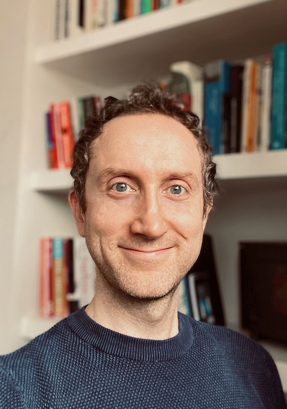

Academic GP
Imperial College London
I am a GP working in the NHS and a clinical academic at Imperial College London. Broadly, my research focuses on two main areas:
In my research, I draw on my experience as a practicing primary care physician, and my expertise in quantitative research, including the analysis of large health datasets using both epidemiological and machine learning methods. I have a broad range of interests and have published widely in health systems research, digital health, epidemiology and global health. A full list of my publications can be found here.
I welcome inquiries from potential PhD students and researchers interested in collaborating in these areas.
I recently completed a clinical PhD at Imperial exploring methods and applications for clustering diseases and people with MLTC. An overview of my PhD research along with supporting analytical codes, are available on my GitHub webpage.
Before starting my PhD, I was Deputy Theme Lead for Digital Health in the NIHR Applied Research Collaboration Northwest London and Clinical Research Fellow in the NIHR Patient Safety Translational Research Centre. During this time, I contributed to an evaluation of the COVID Oximetry @home programme and led a quantitative evaluation of the impact of remote consultations on patients and staff during the pandemic.
I completed clinical training as an NIHR Academic Clinical Fellow at Imperial in 2021, gaining experience across primary and secondary care roles, and working for public health and policy-focused organisations including NHS England, Public Health England and the King’s Fund. My background also includes training as a statistician, having completed an MSc in Medical Statistics at the London School of Hygiene and Tropical Medicine as an NIHR Research Methods Scholar in 2016.
Since 2017, I have acted as lead statistician, and since 2022, as a Trustee for May Measurement Month (MMM), a global blood pressure awareness and screening campaign that has screened over 7 million people worldwide.